# Importing libraries/modules and aliasing them as needed
import pandas as pd
import numpy as np
import matplotlib.pyplot as plt
import seaborn as sns
import statsmodels.api as sm
import sklearnWalkthroughs and Exercises for Statistical Modeling and Inference with Python
Week 1
Walkthrough 1.1: Getting Started
Setting Up the Python Environment
If you haven’t already installed Python, Jupyter, and the necessary packages, there are instructions on the course repo in the README to do so here.
If you aren’t able to do this on your machine, you may want to check out Google Colab. It’s a free service that allows you to run Jupyter notebooks in the cloud.
Load a dataset
# Load in the dataset
spotify_sample = pd.read_csv("spotify_sample.csv")Prepare data
# Select a single feature and target variable
X = spotify_sample[['acousticness']]
y = spotify_sample['energy']Create the model
from sklearn.linear_model import LinearRegression
# Create and fit the model
model = LinearRegression()
model.fit(X, y)LinearRegression()In a Jupyter environment, please rerun this cell to show the HTML representation or trust the notebook.
On GitHub, the HTML representation is unable to render, please try loading this page with nbviewer.org.
Parameters
| fit_intercept | True | |
| copy_X | True | |
| tol | 1e-06 | |
| n_jobs | None | |
| positive | False |
# Accousticness coefficient and intercept
print("Intercept:", model.intercept_)Intercept: 0.7713193659794645print("Accousticness coefficient:", model.coef_)Accousticness coefficient: [-0.47021382]Make predictions
# Store predicted values for each value of X
y_pred = model.predict(X)
# Define a new data point for prediction
new_data_point = pd.DataFrame({'acousticness': [0.35]})
# Make prediction
predicted_energy = model.predict(new_data_point)
print(f"Predicted energy for acousticness =",
f"{new_data_point.iloc[0, 0]}: {round(predicted_energy[0], 2)}")Predicted energy for acousticness = 0.35: 0.61Visualize the regression line
# Plotting the results
sns.scatterplot(x=X.acousticness, y=y, color='blue',
label='Actual Data');
sns.lineplot(x=X.acousticness, y=y_pred, color='red',
label='Regression Line Prediction', linewidth=2);
plt.xlabel('Acousticness');
plt.ylabel('Energy');
plt.title('Actual and Predicted Energy');
plt.tight_layout();
plt.legend();
plt.show();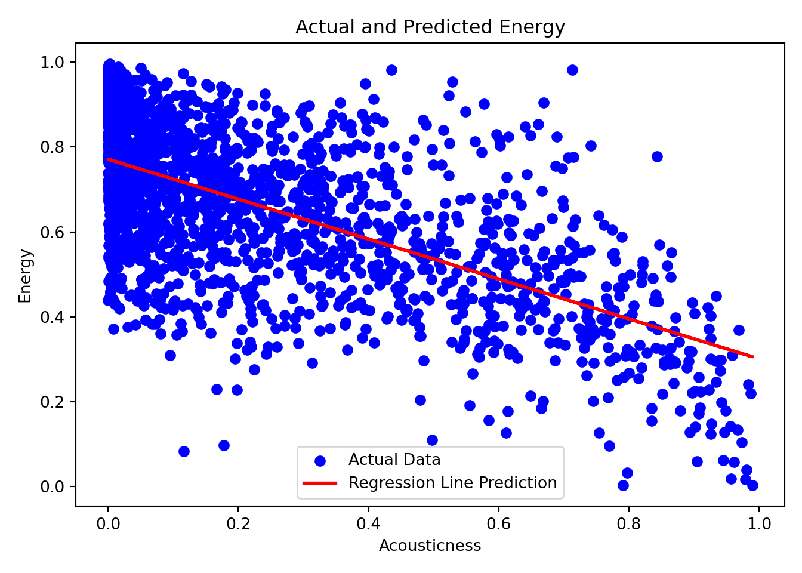
Check if assumptions of linear regression met with visual tools
# Check for Homoscedasticity
residuals = y - y_pred
plt.figure(figsize=(10, 5))
sns.scatterplot(x=y_pred, y=residuals, alpha=0.5)
plt.axhline(y=0, color='r', linestyle='--')
plt.xlabel('Predicted Values')
plt.ylabel('Residuals')
plt.title('Residuals vs Predicted Values')
plt.tight_layout()
plt.show();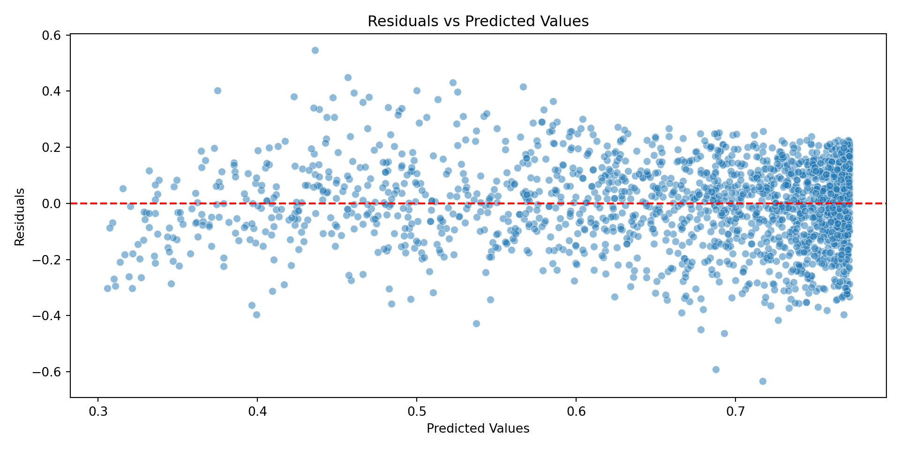
# Check for Normality of Residuals
plt.figure(figsize=(10, 5))
sns.histplot(residuals, kde=True)
plt.xlabel('Residuals')
plt.title('Histogram of Residuals')
plt.tight_layout()
plt.show();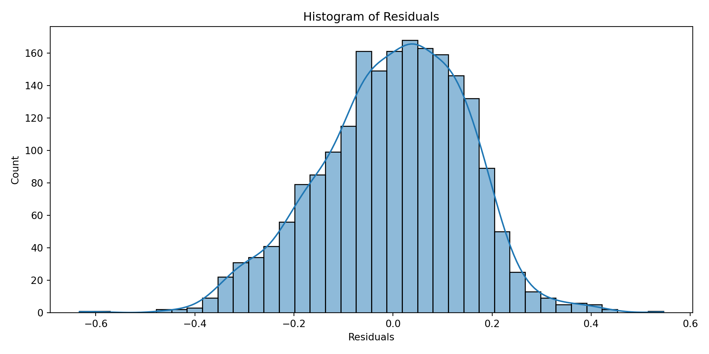
sm.qqplot(residuals, line='s')
plt.title('Q-Q Plot of Residuals')
plt.tight_layout()
plt.show();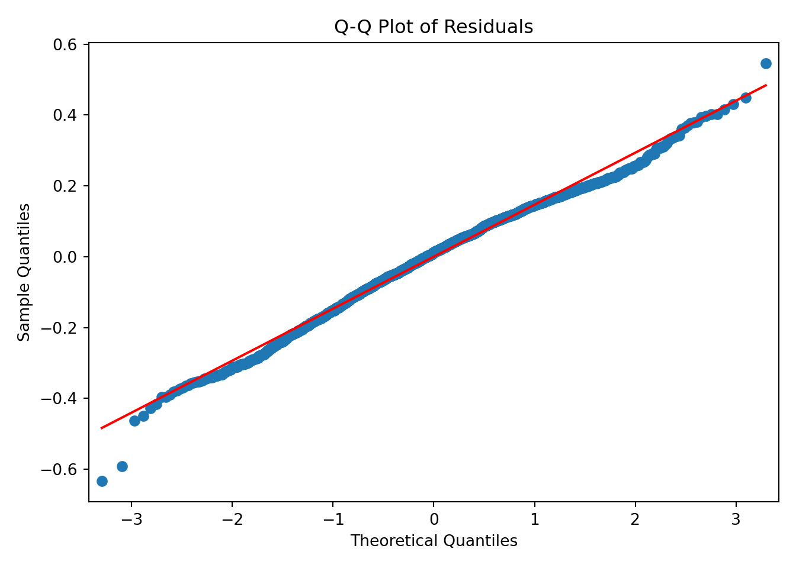
Exercise 1.1: Getting Started
Setting Up the Python Environment
If you ran the # Importing libraries and aliasing them code above, you should be good to proceed here. If not, scroll up and run it.
Load a dataset
# Load in the dataset
imdb_movie_sample = pd.read_csv("imdb_movie_sample.csv")Prepare data
# Select a single feature and target variable
X = imdb_movie_sample[['votes']]
y = imdb_movie_sample['rating']Create the model
# Create and fit the model
model = LinearRegression()
model.fit(X, y)LinearRegression()In a Jupyter environment, please rerun this cell to show the HTML representation or trust the notebook.
On GitHub, the HTML representation is unable to render, please try loading this page with nbviewer.org.
Parameters
| fit_intercept | True | |
| copy_X | True | |
| tol | 1e-06 | |
| n_jobs | None | |
| positive | False |
# Votes coefficient and intercept
print("Intercept:", model.intercept_)Intercept: 6.031369821108833print("Votes coefficient:", model.coef_)Votes coefficient: [0.00000302]Make predictions
# Store predicted values for each value of X
y_pred = model.predict(X)# Define a new data point for prediction (200,000 votes)
new_imdb_data = pd.DataFrame({'votes': [200_000]})# Make prediction
predicted_rating = model.predict(new_imdb_data)# Output results
print(f"Predicted rating for votes = ",
f"{new_imdb_data.iloc[0, 0]}: {round(predicted_rating[0], 2)}")Predicted rating for votes = 200000: 6.64Visualize the regression line
# Plotting the results
plt.figure(figsize=(10, 7));
sns.scatterplot(x=X.votes, y=y, color='blue', label='Actual', alpha=0.4);
sns.lineplot(x=X.votes, y=y_pred, color='red', linewidth=2, label='Regression Line Prediction');
plt.xlabel('Votes');
plt.ylabel('Rating');
plt.title('Actual vs Predicted Rating');
# Disable scientific notation on both axes
plt.ticklabel_format(style='plain', axis='both');
plt.legend();
plt.tight_layout()
plt.show();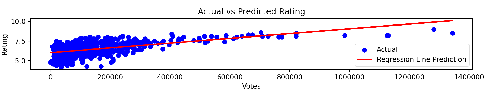
Check if assumptions of linear regression met with visual tools
# Check for Homoscedasticity
residuals = y - y_pred
plt.figure(figsize=(10, 5))
sns.scatterplot(x=y_pred, y=residuals)
plt.axhline(y=0, color='r', linestyle='--')
plt.xlabel('Predicted Values')
plt.ylabel('Residuals')
plt.title('Residuals vs Predicted Values')
plt.tight_layout()
plt.show();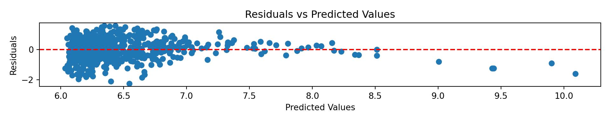
# Check for Normality of Residuals
plt.figure(figsize=(10, 5))
sns.histplot(residuals, kde=True)
plt.xlabel('Residuals')
plt.title('Histogram of Residuals')
plt.tight_layout()
plt.show();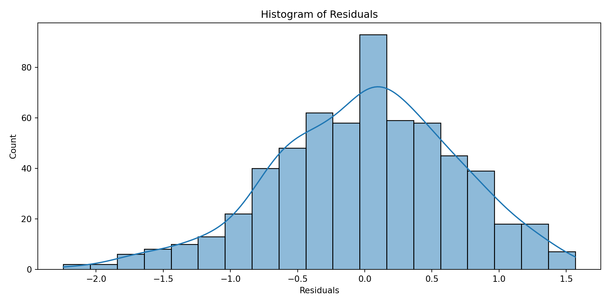
sm.qqplot(residuals, line='s')
plt.title('Q-Q Plot of Residuals')
plt.tight_layout()
plt.show()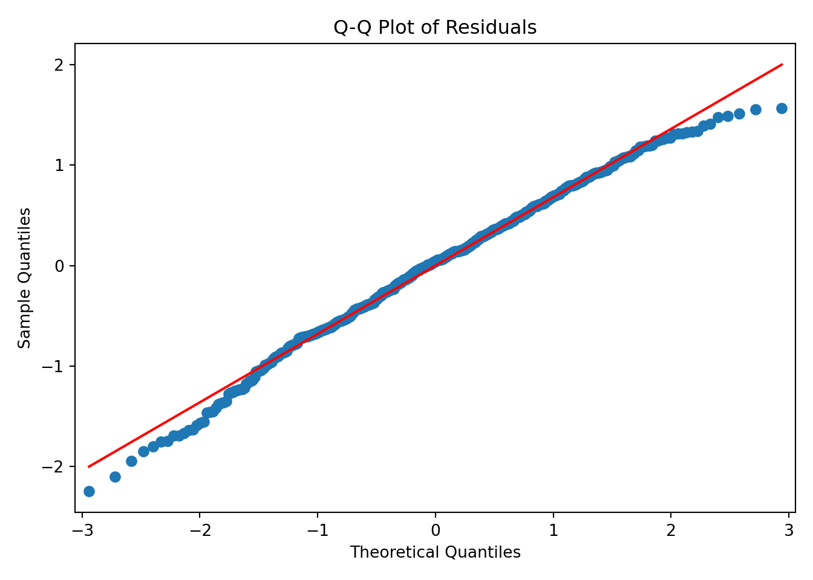
Walkthrough 1.2: Correlation
Correlation matrix
# Select only numeric columns
numeric_columns = spotify_sample.select_dtypes(include=[np.number])
# Calculate Pearson correlation matrix
correlation_matrix = numeric_columns.corr()
# Display the correlation matrix
correlation_matrix popularity duration_ms danceability energy \
popularity 1.0000000000 -0.0822775509 0.1275317909 0.0100579962
duration_ms -0.0822775509 1.0000000000 -0.2647551344 0.0087408159
danceability 0.1275317909 -0.2647551344 1.0000000000 0.0798122972
energy 0.0100579962 0.0087408159 0.0798122972 1.0000000000
key -0.0276310408 0.0282827134 0.0325408526 0.0106713476
loudness 0.0862158646 -0.0831994816 0.2227428691 0.7223389154
mode -0.0354825159 0.0471027863 -0.1286347155 -0.0828935271
speechiness 0.0443355876 -0.1250772329 0.2295437431 0.1019747997
acousticness -0.0667138799 -0.0479062497 -0.0926857715 -0.6342350090
instrumentalness -0.0561176175 0.0282486398 -0.1692649748 -0.1494373646
liveness -0.0089005983 -0.0153715439 -0.0648241906 0.1553282067
valence -0.0208077646 -0.1328668098 0.4184312450 0.3737440605
tempo -0.0094793943 -0.0362865596 -0.1298092644 0.1494705554
time_signature -0.0065270369 -0.0564094177 0.2257508086 0.2091495544
key loudness mode speechiness \
popularity -0.0276310408 0.0862158646 -0.0354825159 0.0443355876
duration_ms 0.0282827134 -0.0831994816 0.0471027863 -0.1250772329
danceability 0.0325408526 0.2227428691 -0.1286347155 0.2295437431
energy 0.0106713476 0.7223389154 -0.0828935271 0.1019747997
key 1.0000000000 0.0092250773 -0.1206347521 0.0674181708
loudness 0.0092250773 1.0000000000 -0.0940195231 0.0945586536
mode -0.1206347521 -0.0940195231 1.0000000000 -0.0648258050
speechiness 0.0674181708 0.0945586536 -0.0648258050 1.0000000000
acousticness 0.0031875443 -0.4762566896 0.1060385673 -0.0522362492
instrumentalness 0.0145399482 -0.3407394364 0.0486991782 -0.0668582291
liveness -0.0092534968 0.1018936954 0.0078275651 0.0273452593
valence 0.0074581901 0.2456952375 -0.0102056628 0.1048554113
tempo -0.0115997978 0.0973944906 -0.0184318041 0.1324410195
time_signature -0.0240717605 0.2304646283 -0.0560682756 0.0798788951
acousticness instrumentalness liveness valence \
popularity -0.0667138799 -0.0561176175 -0.0089005983 -0.0208077646
duration_ms -0.0479062497 0.0282486398 -0.0153715439 -0.1328668098
danceability -0.0926857715 -0.1692649748 -0.0648241906 0.4184312450
energy -0.6342350090 -0.1494373646 0.1553282067 0.3737440605
key 0.0031875443 0.0145399482 -0.0092534968 0.0074581901
loudness -0.4762566896 -0.3407394364 0.1018936954 0.2456952375
mode 0.1060385673 0.0486991782 0.0078275651 -0.0102056628
speechiness -0.0522362492 -0.0668582291 0.0273452593 0.1048554113
acousticness 1.0000000000 0.1251290226 -0.0905502016 -0.2039749633
instrumentalness 0.1251290226 1.0000000000 -0.0422640399 -0.1552183888
liveness -0.0905502016 -0.0422640399 1.0000000000 0.0418160268
valence -0.2039749633 -0.1552183888 0.0418160268 1.0000000000
tempo -0.1299733096 -0.0353808900 0.0300174880 0.0338202643
time_signature -0.1881874529 -0.1317033432 0.0186659383 0.1868402527
tempo time_signature
popularity -0.0094793943 -0.0065270369
duration_ms -0.0362865596 -0.0564094177
danceability -0.1298092644 0.2257508086
energy 0.1494705554 0.2091495544
key -0.0115997978 -0.0240717605
loudness 0.0973944906 0.2304646283
mode -0.0184318041 -0.0560682756
speechiness 0.1324410195 0.0798788951
acousticness -0.1299733096 -0.1881874529
instrumentalness -0.0353808900 -0.1317033432
liveness 0.0300174880 0.0186659383
valence 0.0338202643 0.1868402527
tempo 1.0000000000 -0.0035786979
time_signature -0.0035786979 1.0000000000 Visualizing correlation matrix
# Visualize the correlation matrix using a heatmap
plt.figure(figsize=(12, 8))
sns.heatmap(correlation_matrix, annot=True, cmap='coolwarm', linewidths=0.5)
plt.title('Correlation Matrix Heatmap')
plt.tight_layout()
plt.show();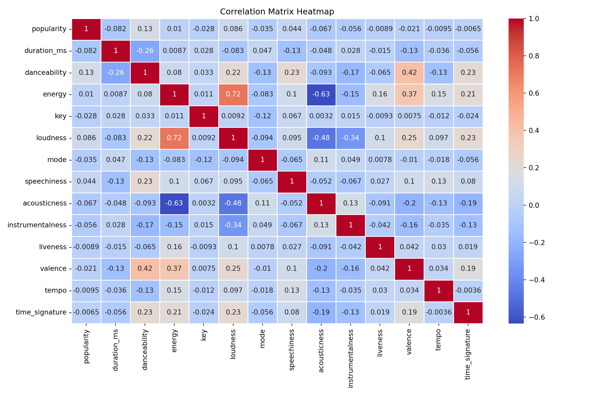
Visualizing relationships
# Plot pairplot to visualize relationships
sns.pairplot(
numeric_columns[['danceability', 'energy', 'loudness',
'valence', 'popularity']]
);
plt.suptitle('Pair Plot of Selected Features', y=1)
plt.tight_layout()
plt.show();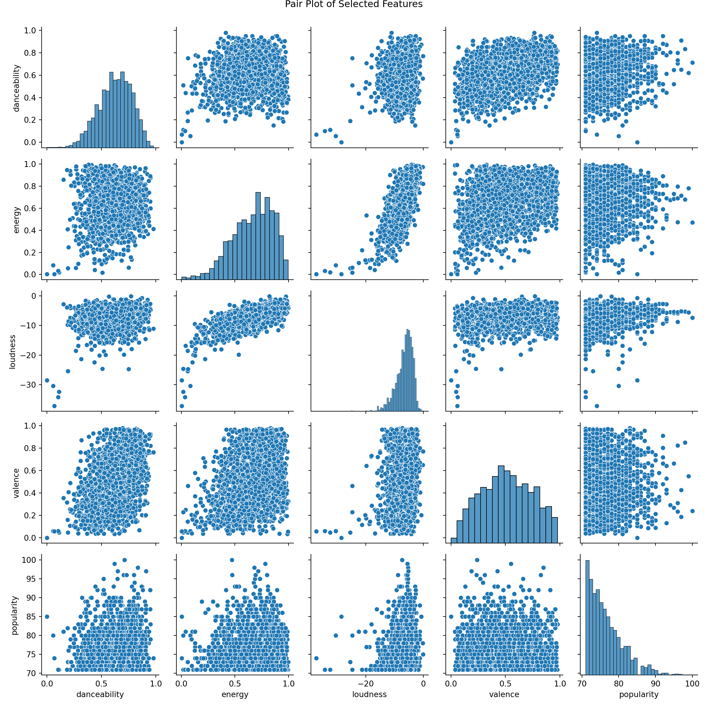
Exercise 1.2: Correlation
Correlation matrix
# Select only numeric columns
numeric_columns = imdb_movie_sample.select_dtypes(include=[np.number])
# Calculate Pearson correlation matrix
correlation_matrix = numeric_columns.corr()
# Display the correlation matrix
correlation_matrix year runtime_in_minutes rating \
year 1.0000000000 -0.2200207410 -0.2256792958
runtime_in_minutes -0.2200207410 1.0000000000 0.4538504288
rating -0.2256792958 0.4538504288 1.0000000000
votes 0.0831128989 0.3055441794 0.5834591385
gross_in_dollars 0.0085255389 -0.0039430790 -0.0499238169
votes gross_in_dollars
year 0.0831128989 0.0085255389
runtime_in_minutes 0.3055441794 -0.0039430790
rating 0.5834591385 -0.0499238169
votes 1.0000000000 0.0300793927
gross_in_dollars 0.0300793927 1.0000000000 Visualizing correlation matrix
# Visualize the correlation matrix using a heatmap
plt.figure(figsize=(12, 8))
sns.heatmap(correlation_matrix, annot=True, cmap='coolwarm', linewidths=0.5)
plt.title('Correlation Matrix Heatmap')
plt.tight_layout()
plt.show()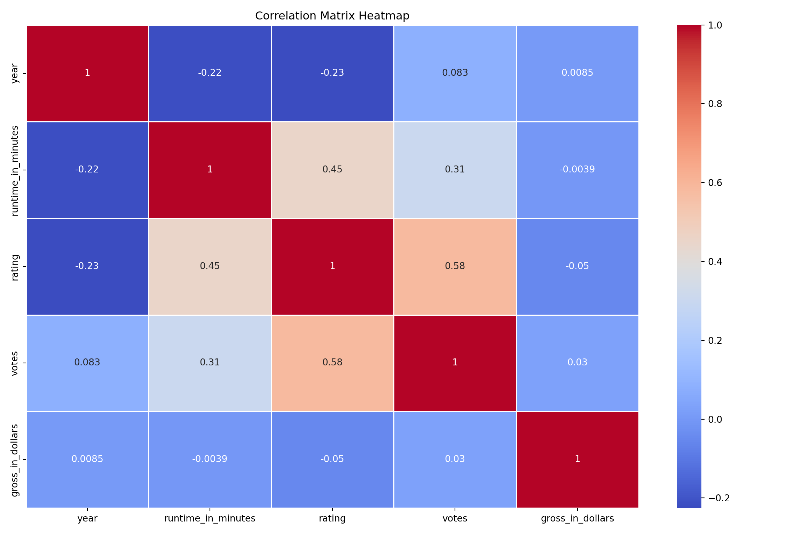
Visualizing relationships
# Plot pairplot to visualize relationships of
# runtime_in_minutes, rating, votes, and gross_in_dollars
sns.pairplot(
numeric_columns[['runtime_in_minutes', 'rating', 'votes', 'gross_in_dollars']]
);
plt.suptitle('Pair Plot of Selected Features', y=1)
plt.tight_layout()
plt.show();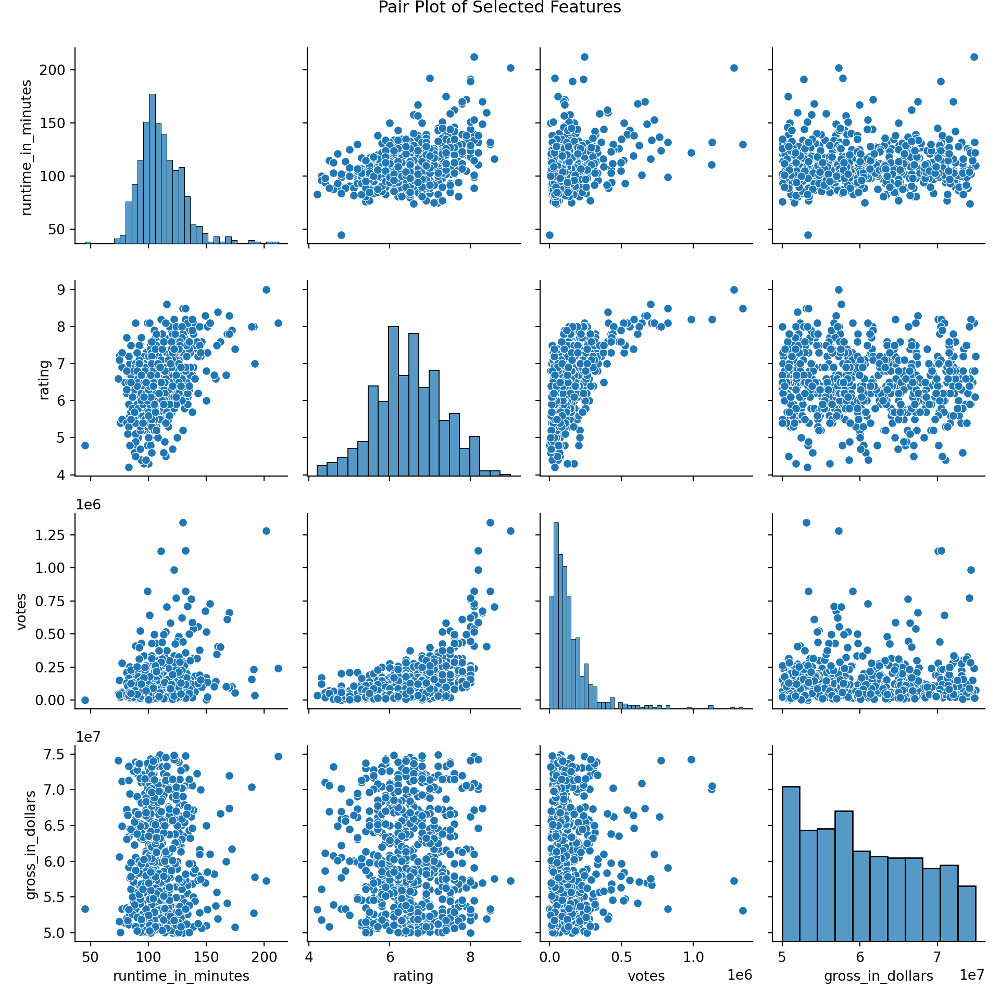
Walkthrough 1.3: Multiple Regression
# Prepare the data for multiple regression by choosing
# Predictors: danceability, energy, and loudness
# Response: popularity
X = spotify_sample[['danceability', 'energy', 'loudness']]
y = spotify_sample['popularity']
# Fit the multiple regression model
model = LinearRegression()
model.fit(X, y)LinearRegression()In a Jupyter environment, please rerun this cell to show the HTML representation or trust the notebook.
On GitHub, the HTML representation is unable to render, please try loading this page with nbviewer.org.
Parameters
| fit_intercept | True | |
| copy_X | True | |
| tol | 1e-06 | |
| n_jobs | None | |
| positive | False |
# Coefficients and intercept
print("Intercept:", model.intercept_)Intercept: 77.17575701553045print("Coefficients:", model.coef_)Coefficients: [ 3.4069261 -2.350777 0.19138243]Exercise 1.3: Multiple Regression
# Prepare the data for multiple regression by choosing
# Predictors: runtime_in_minutes, votes, and gross_in_dollars
# Response: rating
X = imdb_movie_sample[['runtime_in_minutes', 'votes', 'gross_in_dollars']]
y = imdb_movie_sample['rating']
# Fit the model
model = LinearRegression()
model.fit(X, y)LinearRegression()In a Jupyter environment, please rerun this cell to show the HTML representation or trust the notebook.
On GitHub, the HTML representation is unable to render, please try loading this page with nbviewer.org.
Parameters
| fit_intercept | True | |
| copy_X | True | |
| tol | 1e-06 | |
| n_jobs | None | |
| positive | False |
# Coefficients and intercept
print("Intercept:", model.intercept_)Intercept: 5.07418203096002print("Coefficients:", model.coef_)Coefficients: [ 0.0133726 0.00000255 -0.00000001]Walkthrough 1.4: Logistic Regression
Logistic Regression with a Single Predictor
from sklearn.linear_model import LogisticRegression
# Set loudness as predictor/feature and binarize energy: high energy = 1
X = spotify_sample[['loudness']]
y = (spotify_sample['energy'] > 0.6).astype(int)# Fit model
model = LogisticRegression()
model.fit(X, y)LogisticRegression()In a Jupyter environment, please rerun this cell to show the HTML representation or trust the notebook.
On GitHub, the HTML representation is unable to render, please try loading this page with nbviewer.org.
Parameters
| penalty | 'l2' | |
| dual | False | |
| tol | 0.0001 | |
| C | 1.0 | |
| fit_intercept | True | |
| intercept_scaling | 1 | |
| class_weight | None | |
| random_state | None | |
| solver | 'lbfgs' | |
| max_iter | 100 | |
| multi_class | 'deprecated' | |
| verbose | 0 | |
| warm_start | False | |
| n_jobs | None | |
| l1_ratio | None |
# Predict over a smooth range
x_vals = np.linspace(X.min(), X.max(), 300).reshape(-1, 1)
probs = model.predict_proba(x_vals)[:, 1]# Plot predicted and actual energy against loudness
plt.plot(x_vals, probs, color='red', label='Predicted Probability (S-curve)')
plt.scatter(X, y, alpha=0.3, color='gray', label='Actual')
plt.title('Predicting High Energy from Loudness')
plt.xlabel('Loudness')
plt.ylabel('Probability of High Energy')
plt.legend()
plt.grid(True)
plt.tight_layout()
plt.show()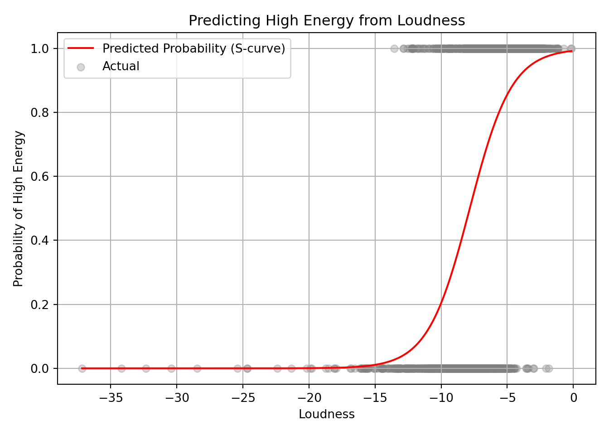
Logistic Regression with Multiple Predictors
# Define predictors (loudness and acousticness) and binary energy response
X = spotify_sample[['loudness', 'acousticness']]
y = (spotify_sample['energy'] > 0.6).astype(int)# Fit the logistic regression model
model = LogisticRegression()
model.fit(X, y)LogisticRegression()In a Jupyter environment, please rerun this cell to show the HTML representation or trust the notebook.
On GitHub, the HTML representation is unable to render, please try loading this page with nbviewer.org.
Parameters
| penalty | 'l2' | |
| dual | False | |
| tol | 0.0001 | |
| C | 1.0 | |
| fit_intercept | True | |
| intercept_scaling | 1 | |
| class_weight | None | |
| random_state | None | |
| solver | 'lbfgs' | |
| max_iter | 100 | |
| multi_class | 'deprecated' | |
| verbose | 0 | |
| warm_start | False | |
| n_jobs | None | |
| l1_ratio | None |
# Predict probabilities
spotify_sample['predicted_prob'] = model.predict_proba(X)[:, 1]# Plot the predicted probabilities
plt.figure(figsize=(10, 5))
sns.histplot(spotify_sample['predicted_prob'], bins=20, kde=True)
plt.title('Predicted Probabilities of High Popularity')
plt.xlabel('Predicted Probability')
plt.ylabel('Frequency')
plt.tight_layout()
plt.show()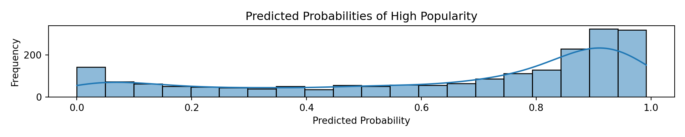
# Scatter plot: predicted probability vs actual outcome
plt.figure(figsize=(10, 5))
sns.scatterplot(x=spotify_sample['predicted_prob'], y=y, alpha=0.5)
plt.title('Predicted Probability vs Actual High Popularity')
plt.xlabel('Predicted Probability')
plt.ylabel('Actual (0 = Low, 1 = High)')
plt.grid(True)
plt.tight_layout()
plt.show()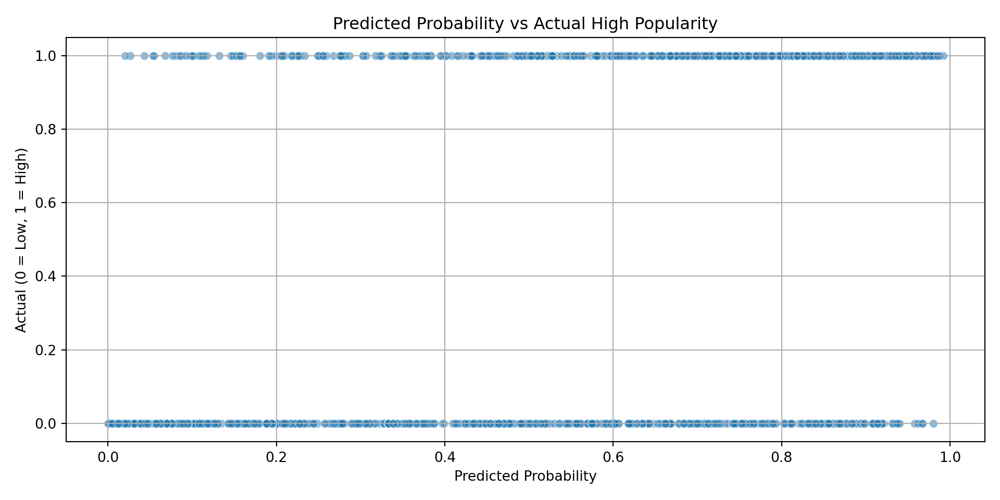
Exercise 1.4: Logistic Regression
Logistic Regression with a Single Predictor
# Define votes predictor and
# binary rating response (rating > 7 -> high rating)
X = imdb_movie_sample[['votes']]
y = (imdb_movie_sample['rating'] > 7).astype(int)# Fit model
model = LogisticRegression()
model.fit(X, y)LogisticRegression()In a Jupyter environment, please rerun this cell to show the HTML representation or trust the notebook.
On GitHub, the HTML representation is unable to render, please try loading this page with nbviewer.org.
Parameters
| penalty | 'l2' | |
| dual | False | |
| tol | 0.0001 | |
| C | 1.0 | |
| fit_intercept | True | |
| intercept_scaling | 1 | |
| class_weight | None | |
| random_state | None | |
| solver | 'lbfgs' | |
| max_iter | 100 | |
| multi_class | 'deprecated' | |
| verbose | 0 | |
| warm_start | False | |
| n_jobs | None | |
| l1_ratio | None |
# Predict over a smooth range
x_vals = np.linspace(X.min(), X.max(), 300).reshape(-1, 1)
probs = model.predict_proba(x_vals)[:, 1]# Plot predicted and actual energy against loudness
plt.plot(x_vals, probs, color='red', label='Predicted Probability (S-curve)')
sns.scatterplot(x=X.votes, y=y, alpha=0.3, color='gray', label='Actual')
plt.title('Predicting High Rating from Votes')
plt.xlabel('Votes')
plt.ylabel('Probability of High Rating')
plt.ticklabel_format(style='plain', axis='both');
plt.legend()
plt.grid(True)
plt.tight_layout()
plt.show()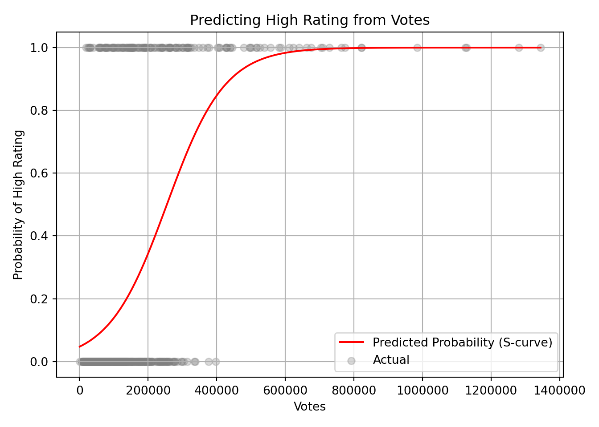
Logistic Regression with Multiple Predictors
# Define predictors (runtime_in_minutes and votes) and
# binary rating response (rating > 7 -> high rating)
X = imdb_movie_sample[['runtime_in_minutes', 'votes']]
y = (imdb_movie_sample['rating'] > 7).astype(int)# Fit the model
model = LogisticRegression()
model.fit(X, y)LogisticRegression()In a Jupyter environment, please rerun this cell to show the HTML representation or trust the notebook.
On GitHub, the HTML representation is unable to render, please try loading this page with nbviewer.org.
Parameters
| penalty | 'l2' | |
| dual | False | |
| tol | 0.0001 | |
| C | 1.0 | |
| fit_intercept | True | |
| intercept_scaling | 1 | |
| class_weight | None | |
| random_state | None | |
| solver | 'lbfgs' | |
| max_iter | 100 | |
| multi_class | 'deprecated' | |
| verbose | 0 | |
| warm_start | False | |
| n_jobs | None | |
| l1_ratio | None |
# Predict probabilities
imdb_movie_sample['predicted_prob'] = model.predict_proba(X)[:, 1]# Plot the predicted probabilities
plt.figure(figsize=(10, 5))
sns.histplot(imdb_movie_sample['predicted_prob'], bins=20, kde=True)
plt.title('Predicted Probabilities of High Rating')
plt.xlabel('Predicted Probability')
plt.ylabel('Frequency')
plt.tight_layout()
plt.show()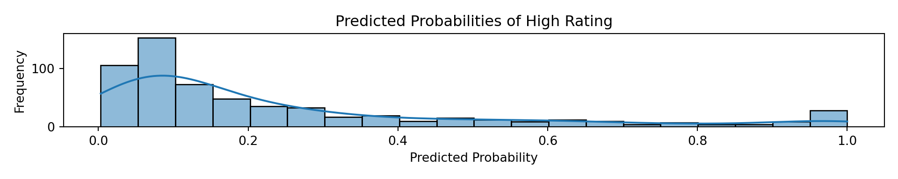
# Scatter plot: predicted probability vs actual outcome
plt.figure(figsize=(10, 5))
sns.scatterplot(x=imdb_movie_sample['predicted_prob'], y=y, alpha=0.5)
plt.title('Predicted Probability vs Actual High Rating')
plt.xlabel('Predicted Probability')
plt.ylabel('Actual (0 = Low, 1 = High)')
plt.grid(True)
plt.tight_layout()
plt.show()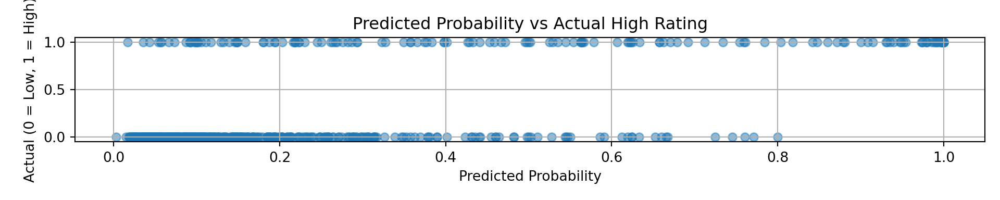
Walkthrough 1.5: ANOVA
One-way ANOVA
from statsmodels.formula.api import ols
# Choose some genres to compare
genres = ['pop', 'rock', 'hip-hop', 'jazz']# Subset the data to focus only on these genres
spotify_sample_subset = spotify_sample[spotify_sample['track_genre'].isin(genres)]# Perform one-way ANOVA analyzing energy across different genres
model = ols('energy ~ C(track_genre)', data=spotify_sample_subset).fit()
anova_table = sm.stats.anova_lm(model, typ=2)
anova_table sum_sq df F PR(>F)
C(track_genre) 0.6934067730 3.0000000000 9.1126797435 0.0000107804
Residual 5.2757481091 208.0000000000 NaN NaNBoxplot across groups
# Boxplot for visualization
plt.figure(figsize=(12, 3))
sns.boxplot(y='track_genre', x='energy', data=spotify_sample_subset)
plt.title('Energy Levels Across Different Genres')
plt.xlabel('Track Genre')
plt.ylabel('Energy')
plt.tight_layout()
plt.show();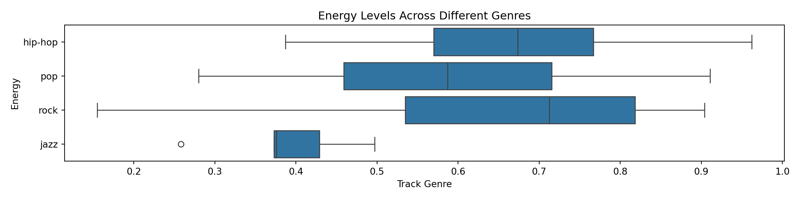
Two-way ANOVA
# Perform two-way ANOVA analyzing energy across genres and explicit content
model = ols('energy ~ C(track_genre) * C(explicit)', data=spotify_sample_subset).fit()
anova_table = sm.stats.anova_lm(model, typ=2)
anova_table sum_sq df F \
C(track_genre) 0.4174453902 3.0000000000 5.4333141883
C(explicit) 0.0137309846 1.0000000000 0.5361521914
C(track_genre):C(explicit) 0.0361559502 3.0000000000 0.4705924222
Residual 5.2500985604 205.0000000000 NaN
PR(>F)
C(track_genre) 0.0050206062
C(explicit) 0.4648680759
C(track_genre):C(explicit) 0.6253051939
Residual NaN Boxplot across groups with color added
# Boxplot for visualization
plt.figure(figsize=(12, 3))
sns.boxplot(x='track_genre', y='energy', hue='explicit', data=spotify_sample_subset)
plt.title('Energy Levels Across Genres and Explicit Content')
plt.xlabel('Track Genre')
plt.ylabel('Energy')
plt.xticks(rotation=90);
plt.legend(title='Explicit')
plt.tight_layout()
plt.show();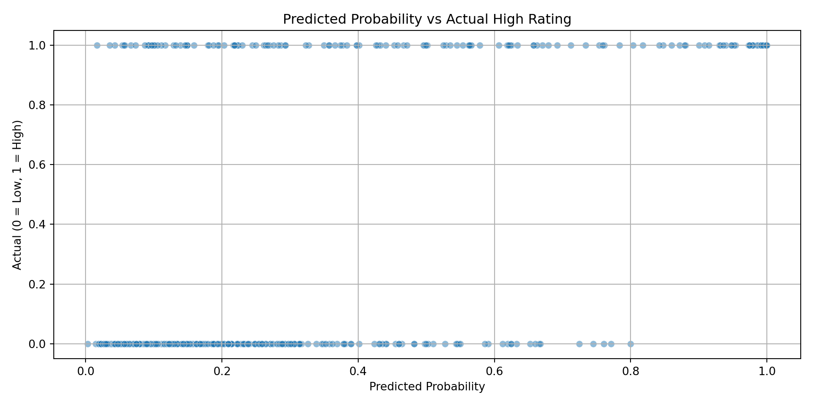
Exercise 1.5: ANOVA
One-way ANOVA
# Choose some genres to compare ('Action', 'Crime', 'Horror', 'Romance')
movie_genres = ['Action', 'Crime', 'Horror', 'Romance']
# Subset the data to focus only on these genres
imdb_movie_sample_subset = imdb_movie_sample[imdb_movie_sample['genre'].isin(movie_genres)]
# Perform one-way ANOVA analyzing rating across different genres
model = ols('rating ~ C(genre)', data=imdb_movie_sample_subset).fit()
anova_table = sm.stats.anova_lm(model, typ=2)
anova_table sum_sq df F PR(>F)
C(genre) 14.8232177340 3.0000000000 8.5042146836 0.0000176091
Residual 221.3665484998 381.0000000000 NaN NaNBoxplot across groups
# Boxplot for visualization
plt.figure(figsize=(12, 4))
sns.boxplot(x='genre', y='rating', data=imdb_movie_sample_subset)
plt.title('Movie Ratings Across Different Genres')
plt.xlabel('Genre')
plt.ylabel('Rating')
plt.xticks(rotation=90);
plt.tight_layout()
plt.show();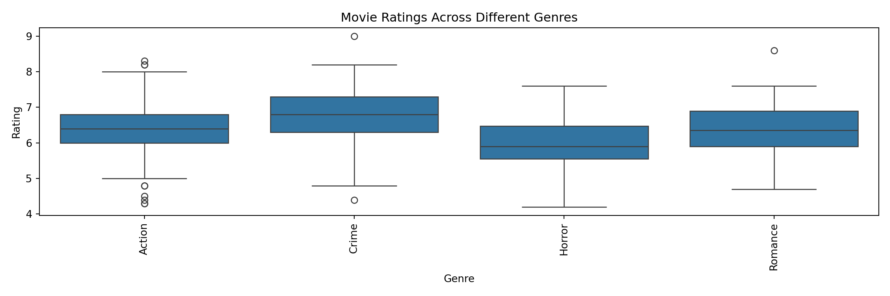
Two-way ANOVA
# Perform two-way ANOVA analyzing rating across genres and decades
model = ols('rating ~ C(genre) * C(decade)', data=imdb_movie_sample_subset).fit()
anova_table = sm.stats.anova_lm(model, typ=2)
anova_table sum_sq df F PR(>F)
C(genre) -0.0000000000 3.0000000000 -0.0000000000 1.0000000000
C(decade) 14.3118058509 6.0000000000 4.2736890848 0.0021612864
C(genre):C(decade) 26.4004381306 18.0000000000 2.6278366604 0.0008773155
Residual 202.6034736719 363.0000000000 NaN NaNBoxplot across groups with color added
# Some customization here to get the decades to appear in the appropriate order
# Define the ordered categories
decades = ['1940s', '1950s', '1960s', '1970s', '1980s', '1990s',
'2000s', '2010s', '2020s']
# Convert 'decade' column to a categorical type with ordered categories
imdb_movie_sample_subset['decade'] = pd.Categorical(
imdb_movie_sample_subset['decade'], categories=decades, ordered=True)
# Boxplot for visualization
plt.figure(figsize=(12, 5))
sns.boxplot(x='genre', y='rating', hue='decade', data=imdb_movie_sample_subset)
plt.title('Movie Ratings Across Genres and Decades')
plt.xlabel('Genre')
plt.ylabel('Rating')
plt.legend(title='Decade')
plt.tight_layout()
plt.show();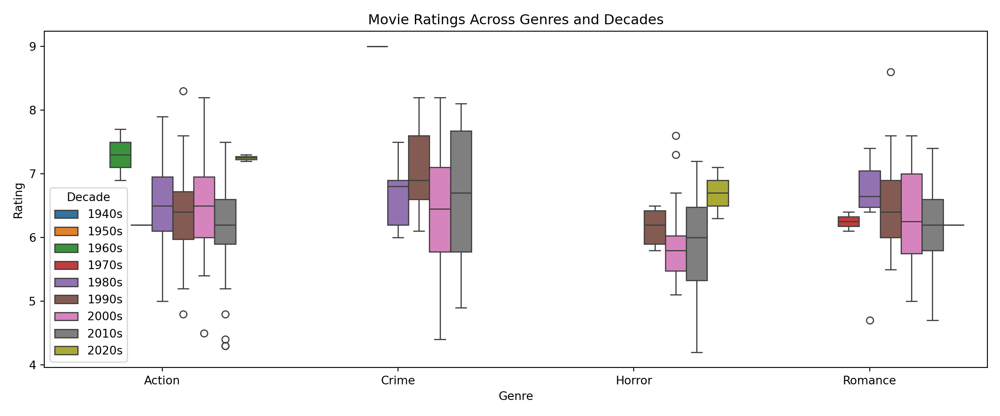
Week 2
Walkthrough 2.1: Kruskal-Wallis and Mann-Whitney U Tests
Kruskal-Wallis
import scipy.stats as stats
# Perform Kruskal-Wallis Test on 'danceability' grouped by 'track_genre'
grouped_data = [group["danceability"].values
for name, group in spotify_sample.groupby("track_genre")]
stat, p_value = stats.kruskal(*grouped_data)
print(f"Kruskal-Wallis Test Statistic: {stat}")Kruskal-Wallis Test Statistic: 716.1550864769308print(f"P-value: {p_value}")P-value: 8.079896027452027e-106Mann-Whitney U
# Perform Mann-Whitney U Test on 'energy' for pop versus rock
group1 = spotify_sample[spotify_sample["track_genre"] == "pop"]["energy"]
group2 = spotify_sample[spotify_sample["track_genre"] == "rock"]["energy"]
stat, p_value = stats.mannwhitneyu(group1, group2)
print(f"Mann-Whitney U Test Statistic: {stat}")Mann-Whitney U Test Statistic: 1331.5print(f"P-value: {p_value}")P-value: 0.006209251182150306Exercise 2.1: Kruskal-Wallis and Mann-Whitney U Tests
Kruskal-Wallis
# Perform Kruskal-Wallis Test on 'rating' grouped by 'decade'
grouped_data = [group["rating"].values
for name, group in imdb_movie_sample.groupby("decade")]
stat, p_value = stats.kruskal(*grouped_data)
print(f"Kruskal-Wallis Test Statistic: {stat}")Kruskal-Wallis Test Statistic: 36.74748438743329print(f"P-value: {p_value}")P-value: 1.2807086053814844e-05Mann-Whitney U
# Perform Mann-Whitney U Test on 'gross_in_dollars' for 1990s versus 2000s
group1 = imdb_movie_sample[imdb_movie_sample["decade"] == "1990s"]\
["gross_in_dollars"]
group2 = imdb_movie_sample[imdb_movie_sample["decade"] == "2000s"]\
["gross_in_dollars"]
stat, p_value = stats.mannwhitneyu(group1, group2)
print(f"Mann-Whitney U Test Statistic: {stat}")Mann-Whitney U Test Statistic: 12435.0print(f"P-value: {p_value}")P-value: 0.12806672731387908Walkthrough 2.2: Correlation and Regression Non-parametrics
Spearman’s Rank Correlation
from scipy.stats import spearmanr, kendalltau
from sklearn.linear_model import TheilSenRegressor
# Filter numeric columns
numeric_columns = spotify_sample.select_dtypes(include=[np.number])
# Calculate Spearman's rank correlation matrix
spearman_corr = numeric_columns.corr(method='spearman')
spearman_corr popularity duration_ms danceability energy \
popularity 1.0000000000 -0.0724404387 0.1297024598 -0.0007773904
duration_ms -0.0724404387 1.0000000000 -0.2516417129 0.0011752092
danceability 0.1297024598 -0.2516417129 1.0000000000 0.0151953098
energy -0.0007773904 0.0011752092 0.0151953098 1.0000000000
key -0.0175740545 0.0282084234 0.0330479159 0.0150449450
loudness 0.0799689147 -0.0913399124 0.1616557677 0.7053226222
mode -0.0368641083 0.0482483424 -0.1309432351 -0.0665196643
speechiness 0.0671387433 -0.2193690157 0.2756320601 0.2648275802
acousticness -0.0400394686 -0.0480849082 0.0419876130 -0.5777585749
instrumentalness -0.0423282818 0.1246080181 -0.1201208069 -0.0455340939
liveness -0.0149145060 -0.0472456203 -0.0944233712 0.1251138606
valence -0.0074381806 -0.1306374038 0.4077224299 0.3541404035
tempo -0.0232684209 -0.0300980081 -0.1168770939 0.1465355182
time_signature 0.0040752637 -0.0522454675 0.1835760112 0.1679341443
predicted_prob 0.0865801302 -0.0648694477 0.1294729042 0.7614876690
key loudness mode speechiness \
popularity -0.0175740545 0.0799689147 -0.0368641083 0.0671387433
duration_ms 0.0282084234 -0.0913399124 0.0482483424 -0.2193690157
danceability 0.0330479159 0.1616557677 -0.1309432351 0.2756320601
energy 0.0150449450 0.7053226222 -0.0665196643 0.2648275802
key 1.0000000000 0.0010608591 -0.1157585035 0.0597733216
loudness 0.0010608591 1.0000000000 -0.0868738961 0.2505651890
mode -0.1157585035 -0.0868738961 1.0000000000 -0.1087031819
speechiness 0.0597733216 0.2505651890 -0.1087031819 1.0000000000
acousticness 0.0120198873 -0.4053474623 0.0590744576 -0.1187386793
instrumentalness 0.0159678228 -0.2485322970 0.0086408071 -0.1166792012
liveness -0.0084343407 0.0839931517 -0.0056003561 0.0359303196
valence 0.0088713812 0.2466183165 -0.0076410315 0.1545953940
tempo -0.0141452862 0.0774757848 -0.0252880091 0.1118773210
time_signature -0.0191233994 0.1375135320 -0.0630735010 0.1455268842
predicted_prob -0.0046953321 0.9267639260 -0.0970246350 0.2577621238
acousticness instrumentalness liveness valence \
popularity -0.0400394686 -0.0423282818 -0.0149145060 -0.0074381806
duration_ms -0.0480849082 0.1246080181 -0.0472456203 -0.1306374038
danceability 0.0419876130 -0.1201208069 -0.0944233712 0.4077224299
energy -0.5777585749 -0.0455340939 0.1251138606 0.3541404035
key 0.0120198873 0.0159678228 -0.0084343407 0.0088713812
loudness -0.4053474623 -0.2485322970 0.0839931517 0.2466183165
mode 0.0590744576 0.0086408071 -0.0056003561 -0.0076410315
speechiness -0.1187386793 -0.1166792012 0.0359303196 0.1545953940
acousticness 1.0000000000 -0.0526997176 -0.0565605920 -0.1178724877
instrumentalness -0.0526997176 1.0000000000 -0.0306627223 -0.1434578235
liveness -0.0565605920 -0.0306627223 1.0000000000 -0.0028665337
valence -0.1178724877 -0.1434578235 -0.0028665337 1.0000000000
tempo -0.1430311342 -0.0094931325 0.0341902927 0.0244527723
time_signature -0.1361925792 -0.0505813146 -0.0167497323 0.1918075581
predicted_prob -0.6845517908 -0.1799477391 0.0914647246 0.2396675556
tempo time_signature predicted_prob
popularity -0.0232684209 0.0040752637 0.0865801302
duration_ms -0.0300980081 -0.0522454675 -0.0648694477
danceability -0.1168770939 0.1835760112 0.1294729042
energy 0.1465355182 0.1679341443 0.7614876690
key -0.0141452862 -0.0191233994 -0.0046953321
loudness 0.0774757848 0.1375135320 0.9267639260
mode -0.0252880091 -0.0630735010 -0.0970246350
speechiness 0.1118773210 0.1455268842 0.2577621238
acousticness -0.1430311342 -0.1361925792 -0.6845517908
instrumentalness -0.0094931325 -0.0505813146 -0.1799477391
liveness 0.0341902927 -0.0167497323 0.0914647246
valence 0.0244527723 0.1918075581 0.2396675556
tempo 1.0000000000 -0.0313723318 0.1210995681
time_signature -0.0313723318 1.0000000000 0.1624745598
predicted_prob 0.1210995681 0.1624745598 1.0000000000 # Heatmap for Spearman's rank correlation matrix
plt.figure(figsize=(10, 8))
sns.heatmap(spearman_corr, annot=True, cmap='coolwarm',
linewidths=0.5, fmt=".2f")
plt.title('Spearman Rank Correlation Matrix')
plt.tight_layout()
plt.show();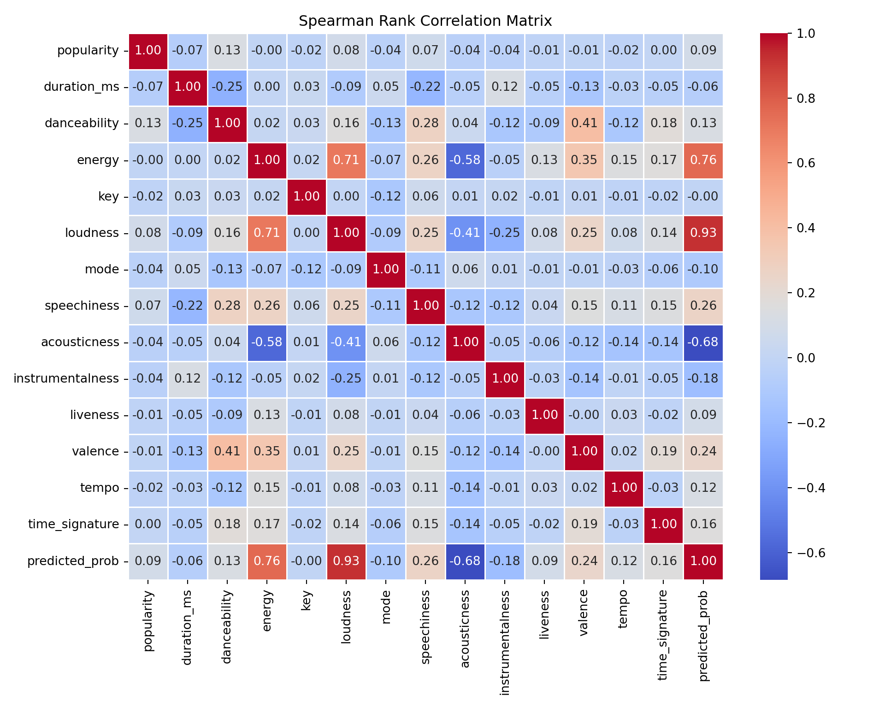
Kendall’s Tau Correlation
# Calculate Kendall's tau correlation matrix
kendall_corr = numeric_columns.corr(method='kendall')
kendall_corr popularity duration_ms danceability energy \
popularity 1.0000000000 -0.0500288647 0.0899368767 -0.0010306163
duration_ms -0.0500288647 1.0000000000 -0.1717490767 0.0001842896
danceability 0.0899368767 -0.1717490767 1.0000000000 0.0070009466
energy -0.0010306163 0.0001842896 0.0070009466 1.0000000000
key -0.0127214932 0.0195324074 0.0228618954 0.0105875160
loudness 0.0551038867 -0.0623904849 0.1087390853 0.5169817359
mode -0.0312175162 0.0394054423 -0.1070393688 -0.0543668684
speechiness 0.0459943084 -0.1489794306 0.1845596397 0.1772474640
acousticness -0.0277724233 -0.0320900699 0.0288220786 -0.4138117597
instrumentalness -0.0309592887 0.0895078432 -0.0833483892 -0.0322857296
liveness -0.0103816765 -0.0310261181 -0.0621747819 0.0838049134
valence -0.0053665109 -0.0876258260 0.2775566448 0.2409262311
tempo -0.0163056755 -0.0202294294 -0.0816593767 0.0999819880
time_signature 0.0034657208 -0.0425425321 0.1495474173 0.1368519151
predicted_prob 0.0598714406 -0.0447000017 0.0862105910 0.5719491824
key loudness mode speechiness \
popularity -0.0127214932 0.0551038867 -0.0312175162 0.0459943084
duration_ms 0.0195324074 -0.0623904849 0.0394054423 -0.1489794306
danceability 0.0228618954 0.1087390853 -0.1070393688 0.1845596397
energy 0.0105875160 0.5169817359 -0.0543668684 0.1772474640
key 1.0000000000 0.0008740660 -0.0985383445 0.0417496348
loudness 0.0008740660 1.0000000000 -0.0709541714 0.1689904402
mode -0.0985383445 -0.0709541714 1.0000000000 -0.0888448824
speechiness 0.0417496348 0.1689904402 -0.0888448824 1.0000000000
acousticness 0.0077370299 -0.2753211647 0.0482602133 -0.0765975070
instrumentalness 0.0120493998 -0.1765425680 0.0075015248 -0.0829035670
liveness -0.0065200884 0.0573683613 -0.0045804010 0.0232382646
valence 0.0061484023 0.1683755954 -0.0062442078 0.1026013021
tempo -0.0098663615 0.0524318352 -0.0206532018 0.0770818382
time_signature -0.0162243003 0.1121446063 -0.0628016326 0.1185496046
predicted_prob -0.0032256886 0.7789570159 -0.0792404303 0.1729968793
acousticness instrumentalness liveness valence \
popularity -0.0277724233 -0.0309592887 -0.0103816765 -0.0053665109
duration_ms -0.0320900699 0.0895078432 -0.0310261181 -0.0876258260
danceability 0.0288220786 -0.0833483892 -0.0621747819 0.2775566448
energy -0.4138117597 -0.0322857296 0.0838049134 0.2409262311
key 0.0077370299 0.0120493998 -0.0065200884 0.0061484023
loudness -0.2753211647 -0.1765425680 0.0573683613 0.1683755954
mode 0.0482602133 0.0075015248 -0.0045804010 -0.0062442078
speechiness -0.0765975070 -0.0829035670 0.0232382646 0.1026013021
acousticness 1.0000000000 -0.0384455619 -0.0398355995 -0.0776077980
instrumentalness -0.0384455619 1.0000000000 -0.0212912851 -0.1023447537
liveness -0.0398355995 -0.0212912851 1.0000000000 -0.0011027586
valence -0.0776077980 -0.1023447537 -0.0011027586 1.0000000000
tempo -0.0959914665 -0.0066778391 0.0229296761 0.0171116280
time_signature -0.1107292041 -0.0438274091 -0.0135656683 0.1560927355
predicted_prob -0.4964554598 -0.1277320427 0.0626076211 0.1615457657
tempo time_signature predicted_prob
popularity -0.0163056755 0.0034657208 0.0598714406
duration_ms -0.0202294294 -0.0425425321 -0.0447000017
danceability -0.0816593767 0.1495474173 0.0862105910
energy 0.0999819880 0.1368519151 0.5719491824
key -0.0098663615 -0.0162243003 -0.0032256886
loudness 0.0524318352 0.1121446063 0.7789570159
mode -0.0206532018 -0.0628016326 -0.0792404303
speechiness 0.0770818382 0.1185496046 0.1729968793
acousticness -0.0959914665 -0.1107292041 -0.4964554598
instrumentalness -0.0066778391 -0.0438274091 -0.1277320427
liveness 0.0229296761 -0.0135656683 0.0626076211
valence 0.0171116280 0.1560927355 0.1615457657
tempo 1.0000000000 -0.0254964352 0.0816096651
time_signature -0.0254964352 1.0000000000 0.1324290915
predicted_prob 0.0816096651 0.1324290915 1.0000000000 # Heatmap for Kendall's tau correlation matrix
plt.figure(figsize=(10, 8))
sns.heatmap(kendall_corr, annot=True, cmap='coolwarm',
linewidths=0.5, fmt=".2f")
plt.title('Kendall Tau Correlation Matrix')
plt.tight_layout()
plt.show();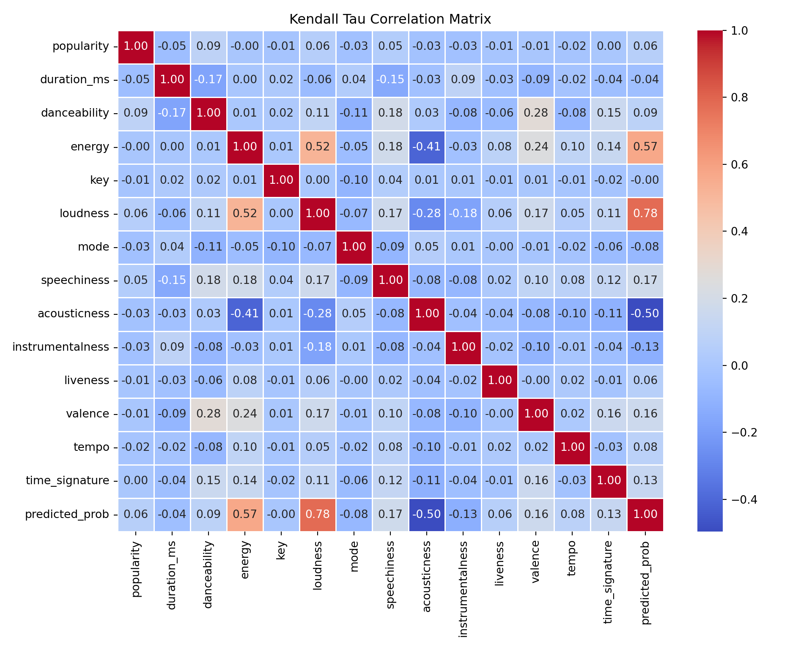
Theil-Sen Robust Regression
# Theil-Sen robust regression for 'danceability' and 'energy'
# predicting 'popularity'
X = numeric_columns[['danceability', 'energy']]
y = numeric_columns['popularity']
theil_sen = TheilSenRegressor()
theil_sen.fit(X, y)TheilSenRegressor()In a Jupyter environment, please rerun this cell to show the HTML representation or trust the notebook.
On GitHub, the HTML representation is unable to render, please try loading this page with nbviewer.org.
Parameters
| fit_intercept | True | |
| copy_X | 'deprecated' | |
| max_subpopulation | 10000.0 | |
| n_subsamples | None | |
| max_iter | 300 | |
| tol | 0.001 | |
| random_state | None | |
| n_jobs | None | |
| verbose | False |
print("Intercept:", theil_sen.intercept_)Intercept: 73.48852582980521print("Coefficients:", theil_sen.coef_)Coefficients: [ 3.09227793 -0.10495802]Exercise 2.2: Correlation and Regression Non-parametrics
Spearman’s Rank Correlation
# Filter numeric columns
numeric_columns = imdb_movie_sample.select_dtypes(include=[np.number])
# Calculate Spearman's rank correlation matrix
spearman_corr = numeric_columns.corr(method='spearman')
print(spearman_corr) year runtime_in_minutes rating \
year 1.0000000000 -0.1422072143 -0.1880401214
runtime_in_minutes -0.1422072143 1.0000000000 0.4094107407
rating -0.1880401214 0.4094107407 1.0000000000
votes 0.1730106500 0.2396250722 0.5362130540
gross_in_dollars 0.0241271334 -0.0083110942 -0.0567188838
predicted_prob 0.0390087506 0.6816700955 0.6137571524
votes gross_in_dollars predicted_prob
year 0.1730106500 0.0241271334 0.0390087506
runtime_in_minutes 0.2396250722 -0.0083110942 0.6816700955
rating 0.5362130540 -0.0567188838 0.6137571524
votes 1.0000000000 0.0195568331 0.8418919222
gross_in_dollars 0.0195568331 1.0000000000 -0.0021070400
predicted_prob 0.8418919222 -0.0021070400 1.0000000000 # Heatmap for Spearman's rank correlation matrix
plt.figure(figsize=(10, 8))
sns.heatmap(spearman_corr, annot=True, cmap='coolwarm', linewidths=0.5)
plt.title('Spearman Rank Correlation Matrix')
plt.tight_layout()
plt.show();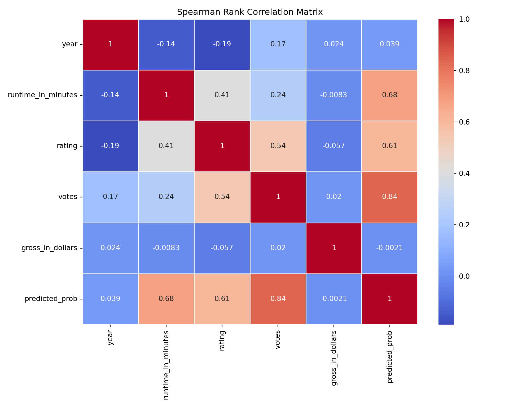
Kendall’s Tau Correlation
# Calculate Kendall's tau correlation matrix
kendall_corr = numeric_columns.corr(method='kendall')
print(kendall_corr) year runtime_in_minutes rating \
year 1.0000000000 -0.0964143570 -0.1295811859
runtime_in_minutes -0.0964143570 1.0000000000 0.2902520549
rating -0.1295811859 0.2902520549 1.0000000000
votes 0.1224500214 0.1631173097 0.3870859563
gross_in_dollars 0.0159829184 -0.0053290090 -0.0389553716
predicted_prob 0.0274032105 0.5037635231 0.4504528262
votes gross_in_dollars predicted_prob
year 0.1224500214 0.0159829184 0.0274032105
runtime_in_minutes 0.1631173097 -0.0053290090 0.5037635231
rating 0.3870859563 -0.0389553716 0.4504528262
votes 1.0000000000 0.0127623254 0.6622481744
gross_in_dollars 0.0127623254 1.0000000000 -0.0012681002
predicted_prob 0.6622481744 -0.0012681002 1.0000000000 # Heatmap for Kendall's tau correlation matrix
plt.figure(figsize=(10, 8))
sns.heatmap(kendall_corr, annot=True, cmap='coolwarm', linewidths=0.5)
plt.title('Kendall Tau Correlation Matrix')
plt.tight_layout()
plt.show();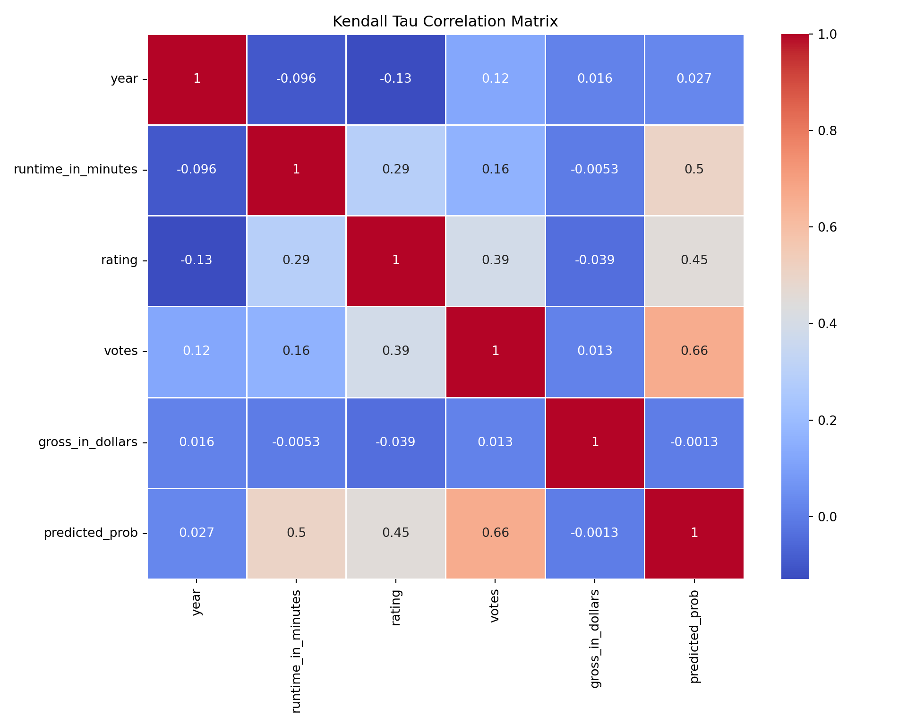
Theil-Sen Robust Regression
# Theil-Sen robust regression for 'votes' and 'runtime_in_minutes' predicting 'rating'
X = numeric_columns[['votes', 'runtime_in_minutes']]
y = numeric_columns['rating']
theil_sen = TheilSenRegressor()
theil_sen.fit(X, y)TheilSenRegressor()In a Jupyter environment, please rerun this cell to show the HTML representation or trust the notebook.
On GitHub, the HTML representation is unable to render, please try loading this page with nbviewer.org.
Parameters
| fit_intercept | True | |
| copy_X | 'deprecated' | |
| max_subpopulation | 10000.0 | |
| n_subsamples | None | |
| max_iter | 300 | |
| tol | 0.001 | |
| random_state | None | |
| n_jobs | None | |
| verbose | False |
print("Intercept:", theil_sen.intercept_)Intercept: 4.390988556133765print("Coefficients:", theil_sen.coef_)Coefficients: [0.00000438 0.01344577]Walkthrough 2.3: Bootstrapping
# Function to perform bootstrapping
def bootstrap(data, n_bootstrap_samples=1000):
bootstrap_samples = []
for _ in range(n_bootstrap_samples):
resample = data.sample(frac=1, replace=True)
bootstrap_samples.append(resample.mean())
return bootstrap_samples
# Perform bootstrapping on the 'energy' column
bootstrap_means = bootstrap(spotify_sample['energy'])
# Plot the distribution of bootstrap means
plt.figure(figsize=(10, 5))
plt.hist(bootstrap_means, bins=30, edgecolor='k', alpha=0.7)
plt.title('Distribution of Bootstrap Means for Energy')
plt.xlabel('Mean Energy')
plt.ylabel('Frequency')
plt.tight_layout()
plt.show();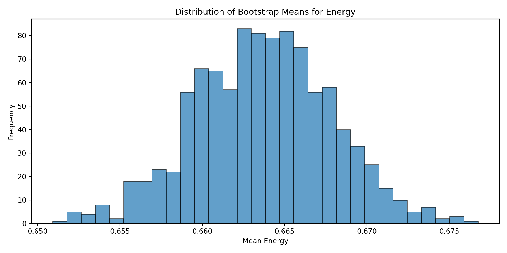
Exercise 2.3: Bootstrapping
# Perform bootstrapping on the 'runtime_in_minutes' column
# using the bootstrap function defined above
bootstrap_means = bootstrap(imdb_movie_sample['runtime_in_minutes'])
# Plot the distribution of bootstrap means
plt.figure(figsize=(10, 5))
plt.hist(bootstrap_means, bins=30, edgecolor='k', alpha=0.7)
plt.title('Distribution of Bootstrap Means for Runtime')
plt.xlabel('Mean Runtime (minutes)')
plt.ylabel('Frequency')
plt.tight_layout()
plt.show();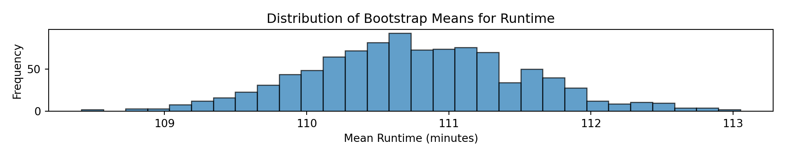
Walkthrough 2.4: Confidence Intervals
# Function to calculate bootstrap confidence intervals
def bootstrap_confidence_interval(data, n_bootstrap_samples=1000, confidence_level=0.95):
bootstrap_samples = []
for _ in range(n_bootstrap_samples):
resample = data.sample(frac=1, replace=True)
bootstrap_samples.append(resample.mean())
lower_bound = np.percentile(bootstrap_samples, (1 - confidence_level) / 2 * 100)
upper_bound = np.percentile(bootstrap_samples, (1 + confidence_level) / 2 * 100)
return lower_bound, upper_bound
# Calculate confidence intervals for the 'energy' column
lower, upper = bootstrap_confidence_interval(spotify_sample['energy'])
print(f"95% Confidence Interval for Mean Energy: [{lower}, {upper}]")95% Confidence Interval for Mean Energy: [0.6554138997035572, 0.6717016833003953]# Plot the distribution of bootstrap means and confidence interval
bootstrap_means = [spotify_sample['energy'].sample(frac=1, replace=True).mean() for _ in range(1000)]
plt.figure(figsize=(10, 5))
plt.hist(bootstrap_means, bins=30, edgecolor='k', alpha=0.7)
plt.axvline(lower, color='r', linestyle='--')
plt.axvline(upper, color='r', linestyle='--')
plt.title('Bootstrap Means and 95% Confidence Interval for Energy')
plt.xlabel('Mean Energy')
plt.ylabel('Frequency')
plt.show();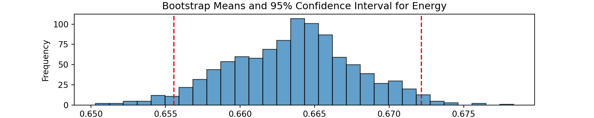
Exercise 2.4: Confidence Intervals
# Calculate confidence intervals for the 'rating' column using the
# bootstrap_confidence_interval function defined above
lower, upper = bootstrap_confidence_interval(imdb_movie_sample['rating'])
print(f"95% Confidence Interval for Mean Rating: [{lower}, {upper}]")95% Confidence Interval for Mean Rating: [6.420217927631579, 6.550847039473684]# Plot the distribution of bootstrap means and confidence interval
bootstrap_means = [imdb_movie_sample['rating'].sample(frac=1, replace=True).mean() for _ in range(1000)]
plt.figure(figsize=(10, 5))
plt.hist(bootstrap_means, bins=30, edgecolor='k', alpha=0.7)
plt.axvline(lower, color='r', linestyle='--')
plt.axvline(upper, color='r', linestyle='--')
plt.title('Bootstrap Means and 95% Confidence Interval for Rating')
plt.xlabel('Mean Rating')
plt.ylabel('Frequency')
plt.tight_layout()
plt.show();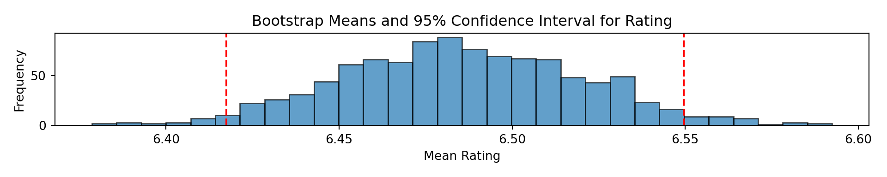
Walkthrough 2.5: Real-World Scenarios for Bootstrapping
Music Industry Analytics
Objective: Analyzing song popularity and estimating population mean popularity.
Scenario: You are a data scientist for a movie production company. Your role is to analyze movie ratings and predict the average rating of movies produced. By using bootstrapping techniques, you aim to estimate the mean movie rating and its variability to understand the unknown population mean.
Bootstrapping Applications:
- Estimating Average Popularity: Use bootstrapping to calculate the mean and confidence intervals of the popularity scores.
- Assessing Variability: Determine the variability in the means of song popularity.
# Calculate bootstrap statistics for the 'popularity' column
# Function to calculate bootstrap statistics
def bootstrap_statistics(data, n_bootstrap_samples=1000):
bootstrap_means = []
for _ in range(n_bootstrap_samples):
resample = data.sample(frac=1, replace=True)
bootstrap_means.append(resample.mean())
return np.mean(bootstrap_means), np.std(bootstrap_means)
mean_popularity, std_popularity = bootstrap_statistics(spotify_sample['popularity'])
print(f"Bootstrapped Mean Popularity: {mean_popularity}")Bootstrapped Mean Popularity: 76.46853063241107print(f"Bootstrapped Std Dev Popularity: {std_popularity}")Bootstrapped Std Dev Popularity: 0.11010639083913946# Plot the distribution of bootstrap means
bootstrap_means = [spotify_sample['popularity'].sample(frac=1, replace=True).mean() for _ in range(1000)]
plt.figure(figsize=(10, 5))
plt.hist(bootstrap_means, bins=30, edgecolor='k', alpha=0.7)
plt.axvline(mean_popularity, color='r', linestyle='--')
plt.title('Bootstrap Means for Popularity')
plt.xlabel('Mean Popularity')
plt.ylabel('Frequency')
plt.tight_layout()
plt.show();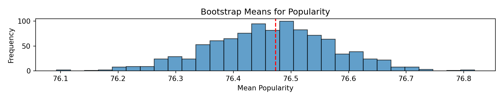
Exercise 2.5: Real-World Scenarios for Bootstrapping
Film Industry Insights
Objective: Evaluating movie gross revenue and estimating population mean gross revenue.
Scenario: You are a data scientist for a movie production company. Your role is to analyze movie gross revenue and predict the average gross revenue of movies produced. By using bootstrapping techniques, you aim to estimate the mean gross revenue and its variability to understand the unknown population mean.
Bootstrapping Applications:
- Estimating Average Gross Revenue: Use bootstrapping to calculate the mean and confidence intervals of movie gross revenue.
- Assessing Variability: Determine the variability in the means of movie gross revenue.
# Calculate bootstrap statistics for the 'gross_in_dollars' column
# using the function called bootstrap_statistics defined above
mean_gross, std_gross = bootstrap_statistics(imdb_movie_sample['gross_in_dollars'])
print(f"Bootstrapped Mean Gross Revenue: {mean_gross}")Bootstrapped Mean Gross Revenue: 60567843.15652796print(f"Bootstrapped Std Dev Gross Revenue: {std_gross}")Bootstrapped Std Dev Gross Revenue: 286811.20073957543# Plot the distribution of bootstrap means
bootstrap_means = [imdb_movie_sample['gross_in_dollars'].sample(frac=1, replace=True).mean() for _ in range(1000)]
plt.figure(figsize=(10, 5))
plt.hist(bootstrap_means, bins=30, edgecolor='k', alpha=0.7)
plt.axvline(mean_gross, color='r', linestyle='--')
plt.title('Bootstrap Means for Gross Revenue')
plt.xlabel('Mean Gross Revenue')
plt.ylabel('Frequency')
plt.tight_layout()
plt.show();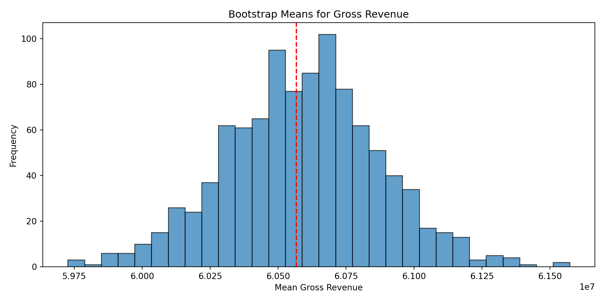